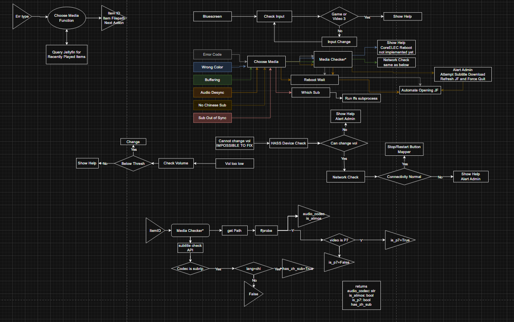
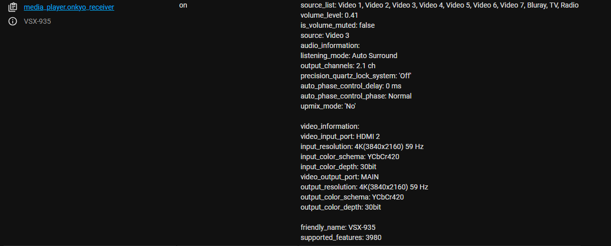
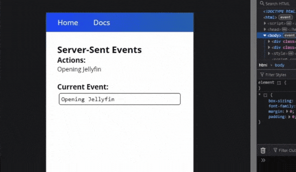
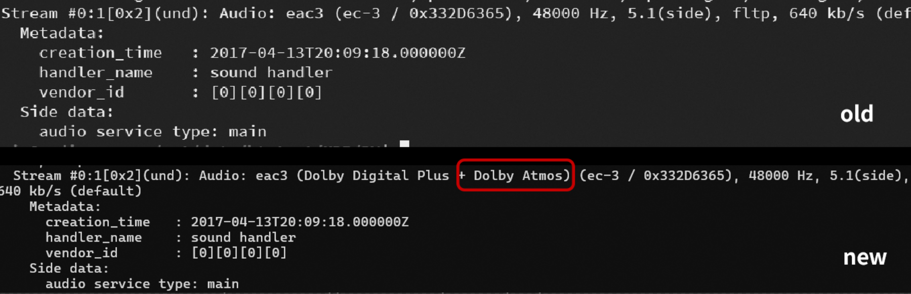
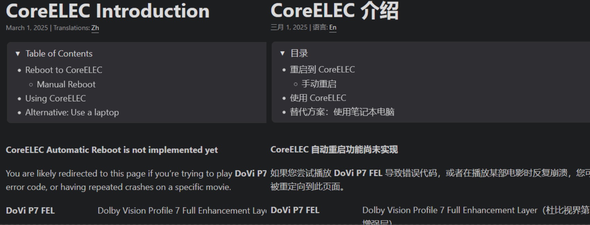
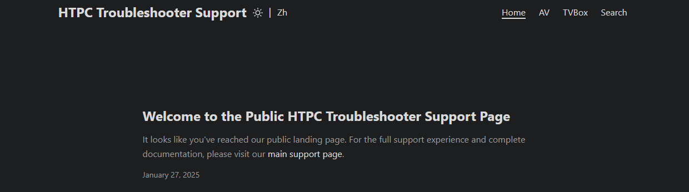
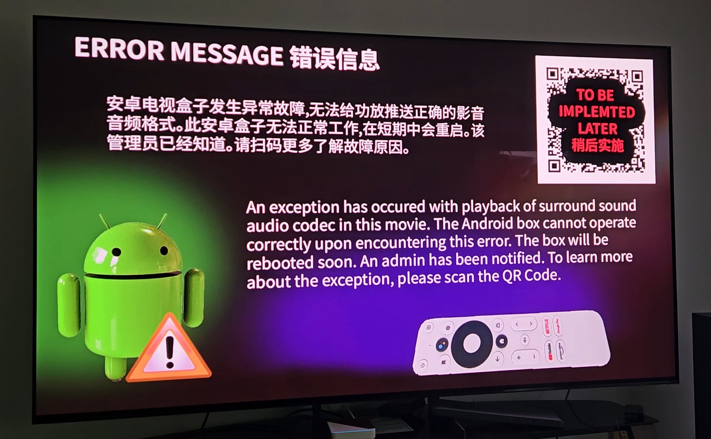
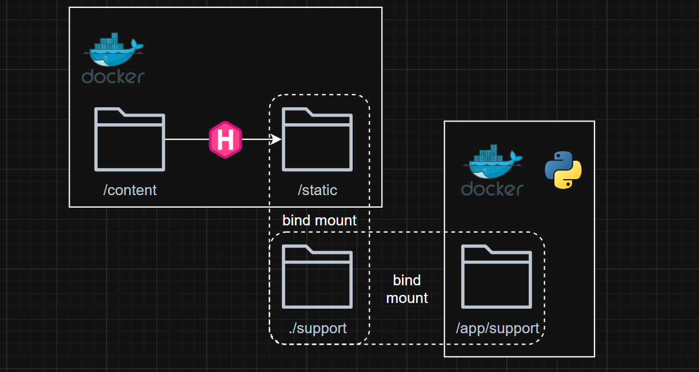
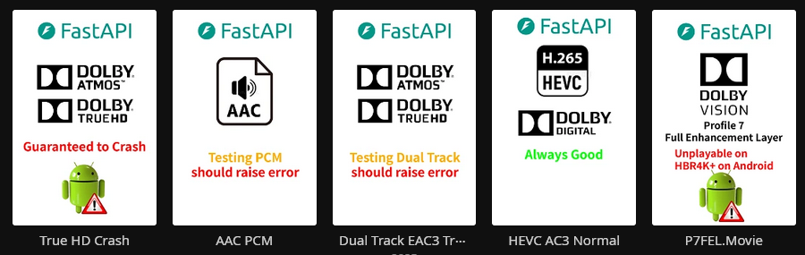

Instead of spending at most 5 minutes for technical support, I went down the dark side and built a fullstack app, it only took me couple months… while learning new frameworks and technologies.
Introduction
HTPC Troubleshooter is a web application designed to address issues with the Homatics Box R 4K Plus and resolve problems that prevent normal playback of Jellyfin media. The app is built using FastAPI, HTMX, with a bundled static site generated by Hugo. It integrates with Jellyfin API to access the media library, Home Assistant API for device control, ffmpeg for media codec query and a fork of onkyo-eiscp for better query of the receiver. The video below shows the app in action:
Note:
I started this project in November 2024, but due to enrolling in a full-time program at BCIT College in January 2025, it took me until May 2025 to complete it.
I’ll be transparent and put this at the top. This project could be useless.
Project Links
-
Main Program Repository:
vttc08/htpc-troubleshooter -
Documentation Repository:
vttc08/htpc-troubleshooter-support -
Live Documentation Preview:
htpc-troubleshooter-support.pages.dev/support
Motivation
Sometimes in November, we were dining at a restaurant and my dad mentioned he encountered issues watching movies.
“it just shows a bunch of error code”
Of course, my dad was unhelpful and didn’t provide which movies caused it or when it happened, he didn’t care. I had to dig through the Jellyfin logs and discovered playback attempts on several movies, all of which played fine when I tested them. Based on my prior testing, I knew exactly what happened and how to “fix” it.
Additionally, my dad gaslit me thinking the errors with the box is due to my misconfiguration. Well, I don’t know assembly code and firmware programming, nor do I hold a Masters in Electrical Engineering. These errors and bugs are here to stay (until I knew CoreELEC existed), but I do know some basic Python and Linux scripting and have a home server. While I can’t fix these errors for good, I can at least provide a way to troubleshoot them and let my dad resolve problems himself.
Vocabulary
- HTPC: Home Theater Computer, a computer used to play media on a home theater system. Even though the Homatics Box is not a HTPC, I’ve thought of the name for a while and didn’t want to change it.
- HBR4K+: Abbreviation for Homatics Box R 4K Plus, or what I call Problematic Box R 4K Plus.
- P7FEL: Dolby Vision Profile 7 Full Enhancement Layer
- HA: Abbreviation for Home Assistant, a home automation system that allows you to control and automate your devices
AV Codecs TV Box Galore
In this section, I’ll give a quick overview of home theater audio, video codecs and TV box capabilities. If you’re mainly interested in the app development, feel free to jump ahead. However, having some background on these topics will clarify the challenges the app is designed to address. Here’s a look at my home theater setup:
- TV: Samsung 4K OLED TV, has integration to Home Assistant
- Receiver: Pioneer VSX-935, supports 4K120Hz and every audio codec
- TV Box: Homatics Box R 4K Plus
Audio
Home theater audio codecs mainly come from Dolby and DTS, and fall into two categories: lossy (used in streaming) and lossless (used in Blu-ray). Spatial audio formats like Dolby Atmos and DTS:X are not codecs themselves, but metadata added to the audio stream. The table below lists common codecs; the globe emoji 🌎 indicates support for spatial audio.
| Type | Dolby | DTS |
|---|---|---|
| Lossy | Dolby Digital (AC-3) | DTS Digital Surround 🌎 |
| Other | Dolby Digital Plus (E-AC-3) 🌎 | None |
| Lossless | Dolby TrueHD 🌎 | DTS-HD Master Audio 🌎 |
Most devices like Google TV, Apple TV, and Fire Stick* support only Dolby Digital/Plus with Atmos. Some higher-end devices support TrueHD and DTS-HD, but these are more expensive. Devices without lossless codec support cannot passthrough the original audio stream to the receiver, leading to playback errors.
Codecs like AAC and MP3 are decoded on the device and sent as PCM (uncompressed audio), which is fine for music but not ideal for high-end home theater setups.
Video
Home theater video mainly uses two codecs: H.264 and H.265 (HEVC), with H.265 offering better efficiency for 4K content. Videos are delivered in two color spaces: SDR (Standard Dynamic Range) and HDR (High Dynamic Range). SDR is the traditional format, while HDR provides richer colors and greater brightness. There are three main HDR formats:
- HDR10: The most common HDR format, supported by most devices, even Windows computers
- HDR10+: HDR10 with dynamic metadata, developed by Samsung and it’s the only dynamic HDR format supported by Samsung TVs
- Dolby Vision: Dynamic HDR format, most TVs except Samsung use this, it is the most adopted HDR format in home theater.
It doesn’t stop here. There are different profiles of Dolby Vision, Profile 5 is mostly used in streaming services and does not have HDR fallback, Profile 8 is used in BluRay and has HDR fallback. The holy grail of is Profile 7 Full Enhancement Layer (P7FEL), it consists of the base and the enhancement layer, but almost no devices except high-end BluRay players support it.

TV Boxes
You might wonder why I invest so much time into the HBR4K+ (you’ll definitely ask that after seeing what I had to do), why not just buy a better TV Box? Like Fire TV, Google, Apple etc, and for fractional of the price. When HBR4K+ is used with CoreELEC, there is nothing like it in the world. For only C$150 (even cheaper in China), this box rivals BluRay players costing thousands of dollars. Cheaper boxes often lack support for lossless audio codecs, which can lead to playback issues. Here’s a comparison
| Device | Dolby/DTS | TrueHD/DTS-HD | HDR10 | HDR10+ | Dolby Vision | P7FEL | Price (C$)** |
|---|---|---|---|---|---|---|---|
| HBR4K+ Android | ✅ | ✅ | ✅ | ✅ | ✅ | ❌ | $150 |
| HBR4K+ CoreELEC | ✅ | ✅ | ✅ | ✅ | ✅ | ✅ | $150 |
| Fire TV 4K Max | ✅ | ❌* | ✅ | ✅ | ✅ | ❌ | $75 |
| Google TV | ✅ | ❌ | ✅ | ✅ | ✅ | ❌ | $130 |
| Apple TV 4K | ✅ | ❌ | ✅ | ✅ | ✅ | ❌ | $200 |
| Nvidia Shield | ✅ | ✅ | ✅ | ❌ | ✅ | ❌ | $270 |
| Windows PC | ✅ | ✅ | ✅ | ❌ | ❌ | ❌ | Free-ish |
*As time of writing, the newest Fire TV 4K Max could support TrueHD and DTS-HD, but I don’t have one to test.
**Price is approximate and subject to change
As shown on the table, HBR4K+ is the only device that checks it all, and at an affordable price.
The Problems
If the HBR4K+ is such a unicorn, why did I build this app? It would have been perfect if it ran CoreELEC, but Kodi (which CoreELEC uses) has a higher learning curve. Even for me, it has some deal-breaking problems. Asking my parents to use Kodi daily is basically impossible. Additionally, since we bought the box from China, my dad expects to watch free Chinese TV and dramas, which are not available on CoreELEC. I’m forced to use Android, and that’s where the problems begin.
Playback Issues
The main issue occurs when the box crashes, at that point, it cannot play any audio, supported or not, and always raises an error. The only fix is a hard reboot. Reboots are also needed for other problems, such as audio desync, random crashes, or when the box fails to passthrough the correct surround sound format to the receiver, sometimes outputting only stereo PCM even for supported formats.
Other Issues
The box previously has CEC volume control issues, where changing the volume on the box remote wouldn’t affect the receiver, however, this was fixed in a risky software update. But CEC issues such as, not being able to turn on the box with the remote (being unresponsive) or the box not turning when TV/Receiver is turned on (resulting in blue screen) still exists. The only fix was to unplug the box and plug it back in, which is not a good solution. Recently, I found out using CEC on the Samsung TV could revive the box.
Planning
So it begins. I started by writing down the issues and how to fix them, then I thought about how to automate these fixes. In terms of coding experience, I have some with Python and Flask, but I heard about FastAPI, which is a modern asynchronous web framework, and I wanted to try it out. On the front-end, I only knew HTML and CSS, no JavaScript (which later I found out its useful), but I found HTMX, a library that allows you to write dynamic webapp using HTML attributes.
I’ve also gathered the resources I have when it comes to APIs and automation:
- Jellyfin: The media server we use, it has a REST API that allows us to query the media library and playback status.
- The API provide information about the media, such as codec, subtitles, filepath and more.
- Home Assistant: The home automation system we use, it has a REST API that allows us to control the devices.
- all my devices are integrated into Home Assistant, including the TV, receiver and the box, which I can use the API to query and control them.
I’ve planned out the lists of errors I want to troubleshoot and the path user should take to fix them. I came up with the following draw.io flowchart:

With my limited experience, I decided to let FastAPI handle everything: when a user accesses an endpoint, the backend performs the required actions and returns the result via Jinja templates. While this isn’t the typical for a fullstack app, it worked for me. I built a home page, a dynamic media chooser, a reboot page, a subtitle download page, and numerous backend functions to support the logic.FastAPI
Jellyfin API
Jellyfin does have Python API client, however, it doesn’t support asynchronous requests, which is what FastAPI is built for, but it isn’t difficult to use my own. I created a JellyfinAsyncClient class that handles the connection to the Jellyfin server with my credentials, it can be instantiated anywhere including the FastAPI app.
Home Assistant API
I created HASync class that handles the connection to the Home Assistant server with my credentials. The Home Assistant API is straightforward, it consists of services and states and entities. Although I created a custom class as the official one has issues, I imported State class from the official client, to represent entity state in compliance with the API. Home Assistant trigger_services also support adb shell commands, I use it to control HBR4K+, such as rebooting, automate clicks and showing error messages. This is better than using Python ADB, since ADB is already authorized in HA, and HA’s persistent querying keeps it alive, I don’t want the “Trust This Computer” prompts to randomly break my app.
Managing Credentials
I used dotenv module and .env file to manage my credentials and settings. I also created configuration.py file to manage the environment, setup logging and generate different settings based on the environment. The settings are then imported into the FastAPI app.
Integration with FastAPI
FastAPI support lifespan events, which allows me to run code when the app starts and stops. I used it to instantiate the JellyfinAsyncClient and HASync classes and store them in the FastAPI app state. When the app shutdown, these classes are destroyed and the connections are closed.
def lifespan(app: FastAPI):
app.haclient = HASync(hass_http_url, hass_token)
Translation
The app being in Chinese is an absolute must, so I priortized internationalization from the start. I could develop the app in English and then translate it, but then you wouldn’t be able to see the English demo (and this article), and I had to rewrite the app just to change the language. I found FastAPI_and_babel which utilizes gettext for translations in both Python and Jinja using _ function. Here’s my setup:
from fastapi_and_babel.translator import FastAPIAndBabel
from fastapi_and_babel import gettext as _
translator = FastAPIAndBabel(__file__, app, default_locale=language, translation_dir="lang")
templates.env.globals['_'] = _ # Important for Jinja2 to use _
Afterward, I built and compiled the translation files, with the correct babel.cfg, the translations are generated in the lang directory where I could edit lang\zh\LC_MESSAGES\messages.po file.
#: main.py:76
msgid "The TV is off. The system will attempt to turn on the TV."
msgstr "电视关闭。系统将尝试打开电视。"
HBR4K+ Strikes Again
This line says it all about the pain of building this.
logger.warning(f"Homatics box is not turned on and cannot be turned on. Skipping relevant functions in decorator.")
Unlike other TV boxes, which can still respond to network requests when turned off, the HBR4K+ becomes completely unavailable to Home Assistant once powered down—only the physical remote can turn it back on.
The context of this code is a decorator that checks whether a device is turned on before running the function, if the device is not turned on, it will turn it on, but if it cannot be turned on, it will skip the function, which is the case for HBR4K+. What’s a decorator? It’s a Python function that wraps another function, allowing us to add functionality to the wrapped function without modifying its code.
def device_must_be_on(func):
def wrapper(*args, **kwargs):
return func(*args, **kwargs)
return wrapper
@device_must_be_on
def my_function():
pass
This works especially well for my receiver. For example, if a volume change is requested while it’s off, the decorator powers it on first, then executes the command to prevent errors.
Onkyo EISCP
This might easily be the hardest part of my app. Although my receiver is integrated with Home Assistant, it provides incomplete information and updates too slowly for my needs. I need to check the receiver’s input audio codec in real time to verify if the HBR4K+ is outputting the correct format, but Home Assistant can take minutes to update, which is unacceptable.

I’ve found Home Assistant uses onkyo-eiscp library, except it doesn’t work on my computer, I remember dealing with cryptic async errors when I tried to integrate it, I gave up…
However, I did find a fork from dannytrigo which people has more success. But it won’t install because of some netifaces error…
Looks like the netifaces library in pip was broken, I had grab and install the .whl manually from expressif.
I’ve “borrowed” some code from the Home Assistant integration, and added my own, which continuously queries the receiver’s audio information for input audio codec.
try:
result = await asyncio.wait_for(controller.query(), timeout=15)
except asyncio.TimeoutError:
result = await controller.query_audio_information()
I used wait_for and with a 15 seconds timeout, the query function checks the receiver every second for the input audio codec and returns only when the output is something other than PCM. TimeoutError implies the receiver is still outputting in PCM after 15s, the query function is stuck. In that case, I query it again, which will return PCM for the next stage.
Until another problem… Whatever inside the EISCP library caused extreme lag and delay to my VSCode syntax highlighting and code completion, it would say I had syntax error when I didn’t. I had to uncomment the import statement, put this aside and restart VSCode.
Server Side Events
I used server side events (SSE) to provide server push functionality to the app, without the complexity of WebSockets. This is used when the troubleshooter attempts to open the film automatically, consisting of several steps:
- Open the package Jellyfin on Android TV
monkey -p <jellyfin> 1 - Click the search button via
adb tap x y - Type the movie name via
adb input text '<movie_name>' - Click down and enter
adb keyevent 20 && keyevent 66
Instead of showing user a single page, I used SSE which can provide real-time updates of the progress, and if error occurs, user will know where. The SSE is implemented in FastAPI with a generator function and StreamingResponse and it’s initiated by HTMX .
async def sse_generator():
yield f"data: ..."
... actions
yield "event: stop\ndata: done\n\n"
...
return StreamingResponse(sse_generator(), media_type="text/event-stream")
<div id="sse" hx-ext="sse" sse-connect="/automate_jf..." sse-swap="message" sse-close="stop">

ffmpeg
When needing to query media codec information, especially for Dolby Vision, I came to the limitation of Jellyfin API, so I used python-ffmpeg to implement ffmpeg/ffprobe asynchronously. I tried the synchronous version first to test what I needed. But since my media files are stored differently on my PC and the server I intend to deploy the app, I used the environment variable ffm_debug to determine whether path replacement is needed, e.g. replace the Linux path from Jellyfin API to Windows SMB path.
"\\10.10.120.16\movies_share\Movie (2019)"
"/mnt/data/Movies/Movie (2019)/"
The ffmpeg.probe have everything I need to make a troubleshooting decision, including Dolby Vision profile. But what comes next is a turning point of this project…
The Switch to Linux/WSL
I switch my code to async version hoping it’d work, but ran into the SelectorPolicy error, which is a common issue with Windows asyncio. This would usually fix it
if sys.platform.startswith('win'):
asyncio.set_event_loop_policy(asyncio.WindowsSelectorEventLoopPolicy())
But not in my case of ffmpeg. I could implement my own async subprocess calls, but I don’t even know how to use the diverse commands of ffmpeg normally, let alone formatting it cleanly in Python as the python-ffmpeg. I decided to continue developing on Linux or Windows Subsystem for Linux (WSL), which I should’ve done from the start since deployment would be on a Linux server anyway. Using pyenv, I set up Python 3.10. Everything worked, except I had to update the netifaces dependency for Linux. The ffm_debug variable was no longer needed, as I could use fstab to mount the SMB share path identically to the Jellyfin server.
//IP/movies_share /mnt/data/Movies cifs credentials=/,uid=1000,gid=1000,file_mode=0755,dir_mode=0755 0 0
ffmpeg Continued
However, ffmpeg didn’t work as expected. It turns out the package maintainer’s ffmpeg is too old and it doesn’t support Dolby Vision profiles and Dolby atmos, but I found a precomplied version that is newer, I manually extracted it to /usr/local/bin and it works. I just need to make a note when building Docker image.

AudioCodecs
This is a custom class I implemented using Python dataclasses. It allows me to represent different audio codecs such as AC3, TrueHD, DTS etc. as well as assigning a score to each codec based on properties (whether there’s Atmos). Since ffmpeg and Onkyo return audio codec in different strings, I created a mapping of audio codecs and used regular expression to extract the name. Based on the codec, a score is assigned which is used for comparison and sorting.
mapping = {
"ac3": {"aliases": ["ac3", "dd", "dolby digital"], "score": 10},
"eac3": {"aliases": ["eac3", "ddp", "dd+"], "score": 20},
"truehd": {"aliases": ["truehd", "dolby truehd"], "score": 50},
"pcm": {"aliases": ["pcm", "lpcm"], "score": -99999},
"dts": {"aliases": ["dts", "dts-hd ma", "dtshd-ma"], "score": 60},
}
Dataclasses allow me to access Python comparison operators and sorting based on its score. For instance, a file could have multiple audio tracks like commentary or compatibility tracks, but by default the player should choose the best track, I can easily implement it by max() function on the list of AudioCodec instiantiated by ffmpeg. I also implemented the __lt__ method to allow comparison based on score, so in my main file, I can use receiver_ac < src_ac to determine whether the box is outputting the correct codec to the receiver.
@dataclass(order=False)
class AudioCodec:
sort_index: int = field(init=False, repr=False)
...
def __lt__(self, other):
# allow comparison based on score
Frontend
HTMX
HTMX lets you build dynamic web apps using HTML attributes, making AJAX requests and updating the DOM. It supports loading indicators and server-sent events with minimal efforts. I also used the HX-Redirect header to handle backend redirects based on logic, such astaking different paths based on the media codec. Here’s an example; there are many HTMX features I didn’t use in this project.
<a class="button" hx-get="/example" hx-indicator="#spinner">
<span>{{ media.Name }}</span>
</a>
Jinja2
Jinja2 is the templating engine used by FastAPI. All templates are stored in the templates directory and rendered with TemplateResponse. Static files like CSS and images are referenced using url_for from the /static folder instead of relative paths. Jinja2 supports control structures such as if statements and loops, and allows passing variables from Python. It also supports macros and blocks; for example, {% include 'header.html' %} lets you reuse headers, HTMX, and other common elements across pages.
Prior to BCIT, I already had minimal viable product (MVP) of the app, the UI is basic as seen from this video.
CSS
I chose to use CSS without any frameworks, just stylesheets and inline styles. By the time I worked on CSS, I was already studying full-time at BCIT, so time was limited. Although relearning web development at BCIT gave me more confidence and I used my spare time to style the app. Initially, I used basic Jinja2 and HTML just to display content, but the layout wasn’t mobile-friendly. Given that my app will be exclusively used on mobile, I focused on small screens, but using modern CSS flexbox and grid, it looks fine on large screens too.
Documentation
Sometimes, the most effective troubleshooting approach is to inform and guide the user. Because the HBR4K+ is closed source, there are cases where the troubleshooter can identify the issue and recommend a solution, but cannot automate the fix. In these situations, providing clear instructions empowers the user to resolve the problem manually.
Hugo/Deployment
Previously, I have used MkDocs for my homelab documentation and Obsidian Quartz for my personal notes, both exclusively in English. Having Chinese documentation is a must. I want to try something new. So I used Hugo, the most popular static site generator, I went with the PaperMod theme, which is a modern, responsive and support multilingual content.
Hugo enforces a strict content structure—Markdown files go in the content directory, and assets like images must be placed in static and referenced via absolute URLs. While Obsidian auto-links images from clipboard, Hugo requires manual handling. I wanted the static site to build into a specific directory so it could be bundled with FastAPI. After some trial and error, I got it working: the site builds with a base URL of /support, supports Chinese versions of posts (e.g., post.zh.md), and includes full functionality like search, images, and translations across both Hugo’s dev server and FastAPI.

I also added interactivity to the documentation site, since my API is served from /xyz, I created links like ../../../../../xyz to access them from the documentation. For example, CoreELEC reboot feature where the user can click a link to reboot directly into it.
Cloudflare Pages
I want the documentation site to function in abscence of FastAPI, I initially tried deploying it to Github Pages, but because of my strict base URL, it wouldn’t work. However, I found that Cloudflare Pages support static sites with a custom path. I created a new repository htpc-troubleshooter-support, built the site to the gh-pages branch, and have Cloudflare Pages monitor for changes. Since my home page is in /support, I added a custom index.html at the root of gh-pages, which redirects to /support.
The documentation site is now live at htpc-troubleshooter-support.pages.dev/support.

Putting it Together
With all APIs and integrations in place, I organized backend logic into separate modules under libs and handled the frontend with templates, static, and support. I mapped user flows, implemented logic and redirects, and tightly integrated all components. However, this high level of integration made automated testing impractical and is partly the reason for multiple delays.
Battle Testing
To test the app, I needed to use my own library and hardware, since the app directly controls my devices. For lengthy or problematic tasks like rebooting the box or automating Android actions, I used dummy functions to speed things up. However, the open-ended nature of testing meant there were countless ways the setup could break. Many nights and weekends, I wanted to work on the project, but my parents were using the TV, so I had to wait until they finished, often late at night. I didn’t switch the dummy functions to the real ones until the very end for this reason. Despite these challenges and the dreaded HBR4K+ “decorator”, the robustness of FastAPI, Jellyfin, Home Assistant, and ffmpeg made testing other components much easier.
Jellyfin Webhook
Jellyfin has a webhook plugin that can send a webhook to my app when a playback starts/stops, it contains information such as Item ID, User ID and playback device. On FastAPI, I created a POST route to handle to webhook, it will query the Jellyfin API for the file path of the media, and uses ffmpeg to query the audio codec. The webhook function will only be triggered if the client is the HBR4K+. Then it queries the receiver for the audio codec, the receiver has a grace period of 15s to output the correct audio codec, and if it doesn’t or still outputs PCM, error is raised and it will be displayed on the TV. The webhook is also triggered when the playback stops, so I can reset the state of the app.
@app.post('/jfwebhook')
async def data(data: Dict[str, Any]):
Android Error Message
Unlike Windows or a proper desktop OS, where a simple VBS with MsgBox() can display messages, Android required a more creative solution. I considered rendering an HTML error page via FastAPI, but even that is limited on Android. The only reliable option was to display a static image using an activity intent from the MiXplorer app. To show an error message, I used Home Assistant to send an ADB command to the box, which opens MiXplorer, start image viewer activity and display the “error image”. This is not ideal, but it works. I just have to adb push the image to the device.
am start -a android.intent.action.VIEW -d file:///sdcard/Pictures/htpc-error.png -timage/* com.mixplorer.silver/com.mixplorer.activities.ImageViewerActivity

Why is there JavaScript?
You may notice there are Javascript even though I mentioned I didn’t know any. Well, I learned some JavaScript while studying at BCIT, and I think it’s very useful in web development. It might even be possible to rewrite the entire app in JavaScript while only having FastAPI as a CORS proxy that inject Authorization header to the requests, but I went this far into the project, it’s not a wise idea to restart. HTMX actually have JavaScript events which I could listen such as when server sent events are finished, and I implmented callbacks to handle these events.
document.addEventListener("htmx:sseClose", function (event) {})
No Chinese Subtitles
This isn’t a feature I want to implement, but it’s probably the most needed one. When importing movies, I always have extensive QC checks on subtitles, such as whether the subtitles are in Chinese, synced, multiple languages and no ads, I have a dedicated repo for it. However, I need to handle the edge cases. I utilized pythons abstractmethod and setup the folder structure in a way I could easily add new subtitle providers (even though I won’t). I used SubDL and they provide an API with generous rate limit. I implemented a SubDLProvider class that handles the API searches, downloads and processing (extracting archive), with temporary storage in /tmp.
Instead of moving the files via filesystem, I used the Jellyfin API to upload the subtitles, this allows my media directory mount as read-only in Docker -v /mnt/data/Movies:/movies:ro, minimizing the risk of errors. I added a method to take the subtitle path, encode it to base64 and upload it to Jellyfin, which will be immediately available in the media library.
Unimplemented and Other Features
I did not implement Wrong Color and Subtitle Out of Sync. The first one refers to Dolby Vision profile 5, where the colors are green/purple tint. This only occurs on Windows when players incorrectly configured, since I don’t except my parents to configure players, this will not happen. Similarly for Subtitle Out of Sync, there is ffsubsync but this issue almost never occurs and I don’t want to spend more time implementing it.
I also tried adding WebSocket support. It would be useful to be able to view and control the status of TV/receiver/HBR4K+ in real-time. I even had working code using asyncws to connect to Home Assistant WebSocket and convert it to FastAPI WebSocket. I noticed while debug logging, I’m receiving a lot of messages, because HA sends updates of ALL my devices. Suppressing the logs won’t change the fact that the message is still sent and WS remains open. This is not a problem for official Home Assistant which runs on client side which disconnect on browser close. But mine runs on server side, which is always open, increasing both the load of this and the HA server. Additionally, if I wanted that functionality, I could create a simple HA dashboard and use one line of HTML <a> to link to it or use an iframe.
Other simple features include changing the volume, turning on/off the box via CEC if remote doesn’t work, changing the correct receiver input and reboot out of CoreELEC (if user is stuck there), most of these are implemented via Home Assistant API.
Deployment
The app already runs well in a Linux environment, so I didn’t expect any issues with Docker. The only limitation is Docker’s bridge network, which blocks broadcast messages. However, since I access the Onkyo receiver via its IP address and don’t rely on discovery, this isn’t a problem.
Docker
I followed standard Python Docker procedure, which starts from python:3.10-slim image, copy the source code, requirements.txt, compile the translations and run the app via uvicorn. Since I need a custom ffmpeg, and getting that requires extra Linux packages, I used a multi-stage build to copy the ffmpeg binary from the first stage to the final image. This way I can keep the Python image small, which is now about 400MB according to docker images.
Static Site
The app requires /support static site to be served, normally this should be included in the Docker image, but since hugo build requires a base URL and I can’t hardcode it at build time. Instead, I built the static site in a separate Docker image and bind-mounted it into the FastAPI container. I created a hugo.Dockerfile that includes the Hugo binary and my Git repo.
docker build --build-arg GH_TOKEN="" --build-arg REPO="github.com/vttc08/htpc-troubleshooter-support" -t hugo -f hugo.Dockerfile .
I used GH_TOKEN since my repo was private, as a result, I can no longer publish the built image online, this wasn’t best practice, as I’m still learning Docker and CI/CD. To serve the static site, I ran the Hugo build in a container and bind-mounted a host path to capture the output. That same path is then mounted into the FastAPI container as /support.
docker run --rm -it --name hugo -v ./support:/static hugo hugo build --baseURL http://host:port/support -d /static

We have integration testing at home…
Mom, can we have proper integration testing with pytest and Github Actions CI? No, we have integration testing at home.

The tight integration of my home theater makes integration testing difficult. I still provided some “test cases” to specifically test the features regarding audio codecs. This is demonstrated from the video at the beginning. Instead of writing the tests in code, I created a test media with various formats.
- DV P7FEL: Dolby Vision Profile 7, it’s not playable on HBR4K+ Android but playable on CoreELEC
- HEVC AC3 Normal: Normal file that should be playable everywhere
- Dual Track EAC3/TrueHD: A file with two audio tracks, one EAC3 and one TrueHD but defaults to EAC3, since TrueHD is the better codec, when playing this, error should be raised
- AAC PCM: A file with AAC audio codec, which will be played as PCM, error should be raised
- True HD Crash: A file with TrueHD audio codec, which will crash the box when played
As expected, the dual track and AAC files all raised errors, indicating my Jellyfin webhook, ffmpeg and onkyo-eiscp integration works. The other files I’ve used to test the troubleshooter logic, such as when user encounter P7 FEL, the troubleshooter will suggest to reboot into CoreELEC; or if user encounter crash on the normal file because of the broken TrueHD file, the troubleshooter will suggest to reboot rather than CoreELEC.
I used Adobe Premiere Pro and After Effects to create the video, then used ffmpeg to extract the surround sound audio and merge it with my video, the -map and -c copy makes it easy for AV manipulation. I also used concat to repeat the file multiple times to make video as similar length as a typical Jellyfin movie.
ffmpeg -i myvideo.mp4 -i truehd.mkv -map 0:v -map 1:a -c copy output.mkv
ffmpeg concat -i input.txt -c copy output.mp4
This Project Could Be Useless
As my media library grows and includes more P7 FEL content, encountering playback errors will likely become more common, the switch to CoreELEC might be inevitable. While Kodi has deal-breakers, its robust plugin and scripting ecosystem built on Python offers flexibility for customization, either by myself or ChatGPT. The troubleshooter was originally built for Android and some of its features may not carry over to CoreELEC, many of the issues it addresses will also disappear in CoreELEC. Moving to CoreELEC presents an opportunity to enhance the troubleshooter further, leveraging the openness of Kodi and Linux to add new capabilities and help my parents adapt to the updated system.
Conclusion
This project has been a learning experience for me, both in terms of coding and web development. I learned how to use FastAPI, HTMX, Jinja2, Home Assistant, REST API, ffmpeg, Audio Video Codecs, Hugo, Docker, and more. What started as some obscure errors from a frustrating box has turned into a full-fledged webapp featuring many frameworks and integrations. It feels good to type the Docker command and see the production app come to life and working as expected.
Till the next project!